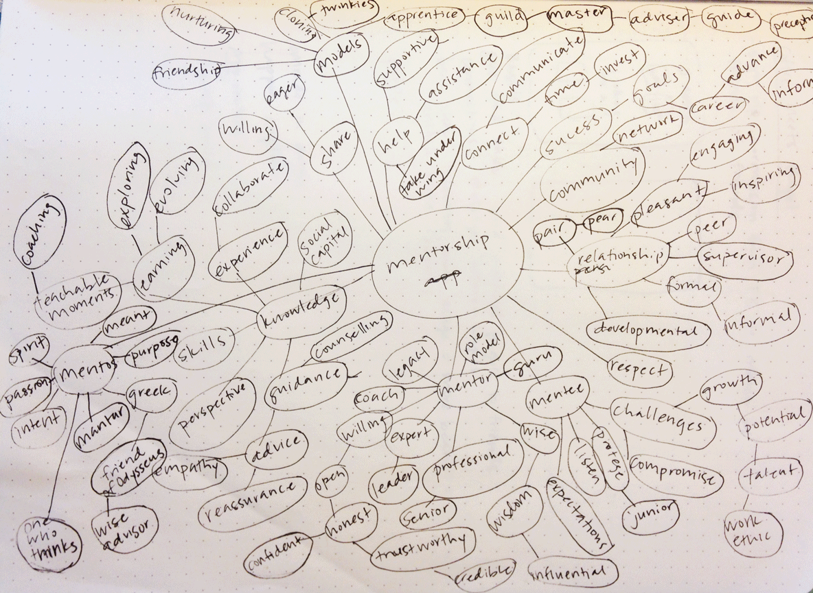
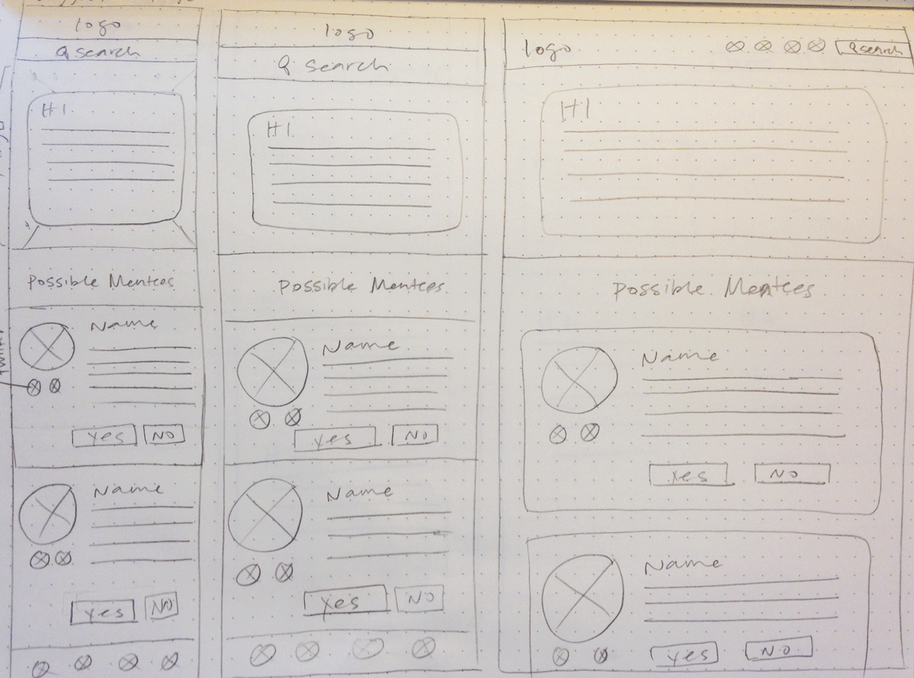
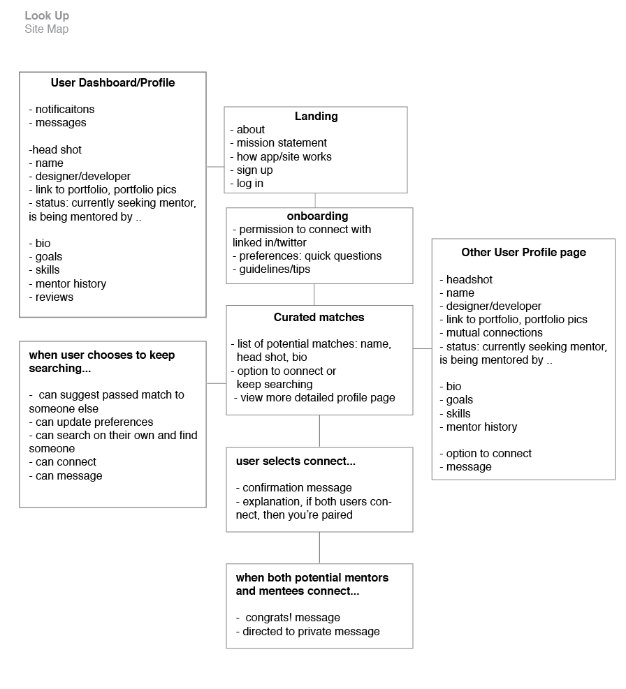
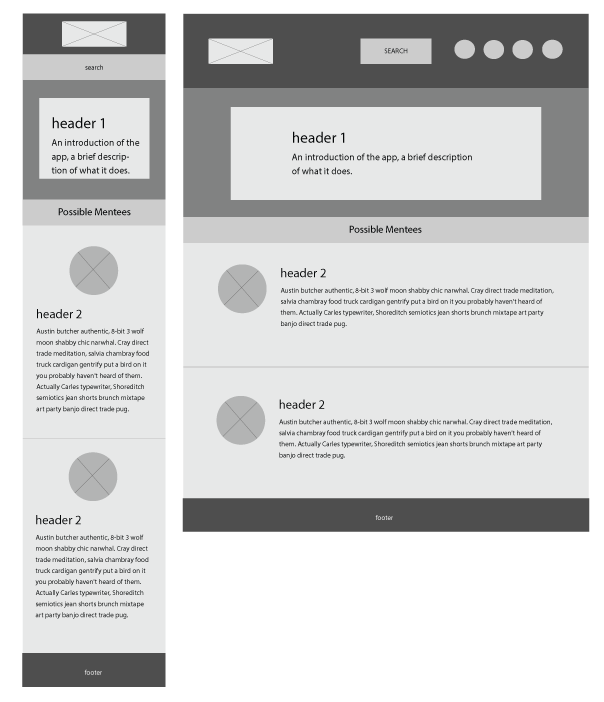
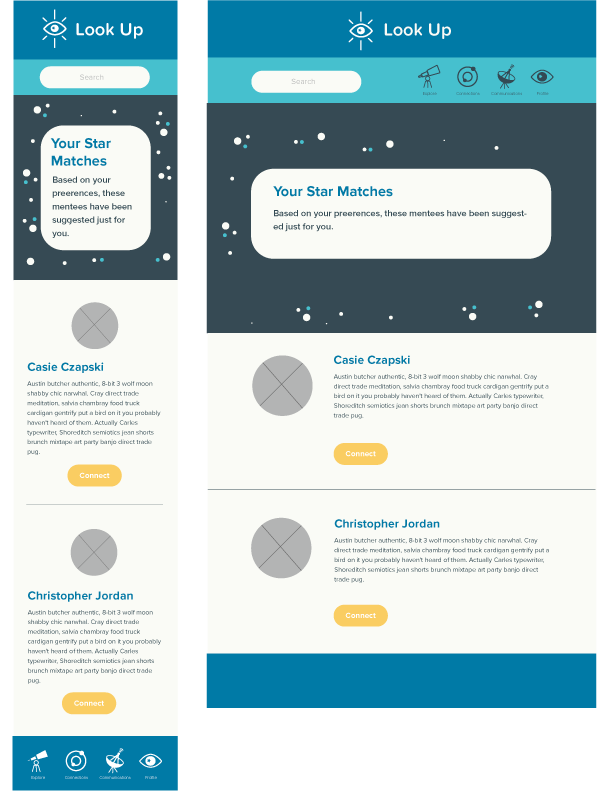

Research and Process
Word Lists
I started my process by researching the history of mentorship, conducting user interviews and surveys, competitor research, S.W.O.T Analysis and a word list.
Sketches
After researching mentorship and gathering data from user surveys, I started sketching pages to explore different layout ideas and concepts in three media queries. The sketch below was the basis for the profile page.
Site Maps
I studied dating websites and professional networking sites to get ideas on how the site would flow. Studying other sites helped me to better structure the content and create a site map.
Style Tiles
I created 9 style tiles around six different concepts to explore different themes, type and color options. After getting feedback from multiple people, I chose one and made some color and type edits.

Logos and Icons
Naming the site was a challenge. I used a morphological matrix to combine different imagery associated with stars and mentorship to explore name and logo ideas. Then I picked a few promising sketches and brought them into Illustrator for further development. After the logo was created I was able to focus on creating an icon set that complimented the logo and concept of the site.
Wireframes
After studying other sites to help me structure the content, I created wireframes for 3 media queries to explore layouts. The layout below worked well for the connections page because it presented information in a simple way.
Comps
I brought all of my research pieces together to create a comp with color, type, content and layout. Bringing everything together helped me to see what pieces were working together and which ones were not, helping me edit and make necessary changes before production.
